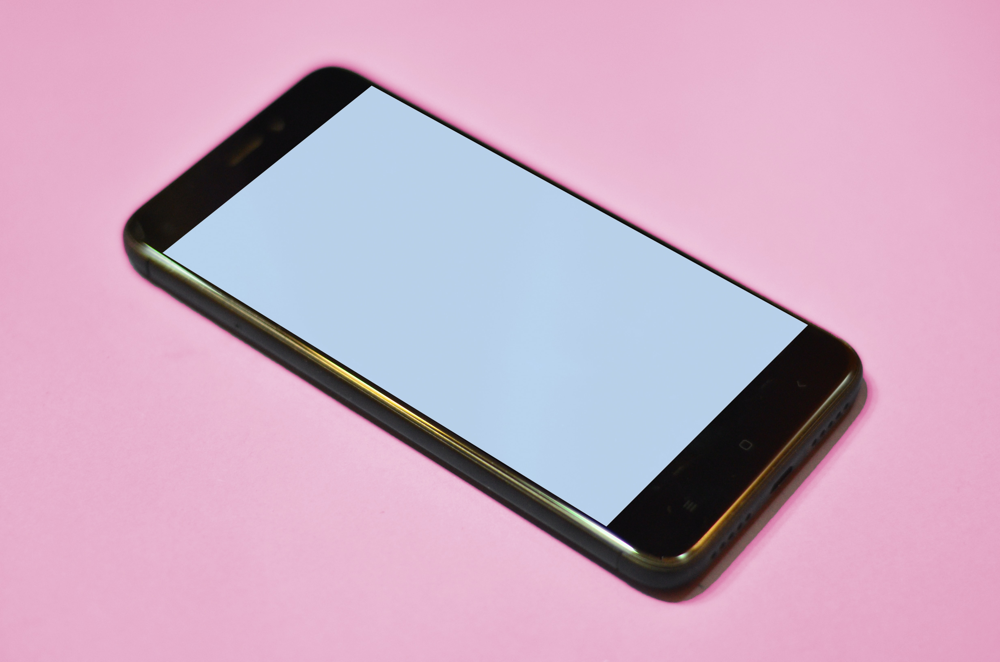

Listen
to your
heart.
to your
heart.

Improves
mood.
mood.
Studies show that listening to music can benefit overall well-being, help regulate emotions, and create happiness and relaxation in everyday life.

Communication.
Mobile phones provide the means to communicate with friends, family, coworkers, and indeed most of the world's population instantly. Unlike previous communication devices, they can be on hand for the caller at all times and used in any place where there is a signal.

What's a computer?
Although there are disadvantages to using a computer, we believe the advantages greatly outweigh them. Below is a list of the main advantages and benefits users get from using computers.
| Advantage | Description |
|---|---|
| Increase your productivity | Computers increase your productivity and, with a good understanding of the software running on them, you become more productive at everything you do. For example, once you have a basic understanding of using a word processor, you can create, store, edit, share, and print documents and letters. Each of these tasks were either impossible or slower with all pre-existing technologies. |
| Connects you to the Internet | Connecting a computer to the Internet unlocks its full potential. Once connected, your choices and available options, as far as information goes, are almost limitless. Many of the benefits listed on this page pertain to a computer connected to the Internet. |
| Can store vast amounts of information and reduce waste | Computers are capable of storing and accessing vast amounts of information. For example, a computer and devices like eBook readers can store hundreds or thousands of books, given enough storage capacity. By storing books, documents, movies, pictures, and songs digitally, you can quickly find what you need with a search and share information between devices. It eliminates the need for paper used to make non-digital versions of the media. |
| Can make you money | When connected to the Internet, a computer could help you make money in many different ways. For example, it's cheaper to create and run an online store than to have a physical store. Also, once online, your store or product has a global audience, and you could sell to anyone in the world. |
| Improves your abilities | Are you not the best speller, have poor grammar, not great at math, don't have a great memory, or need help with something else? Using a computer improves all your abilities, or if you have a hard time learning, you can rely on the computer as an assistant. |

(Keep studying!) (Have a chill time sometime.)